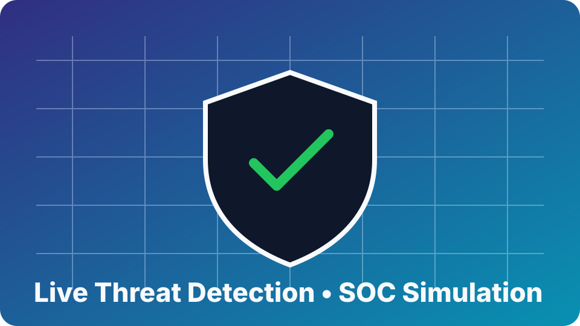
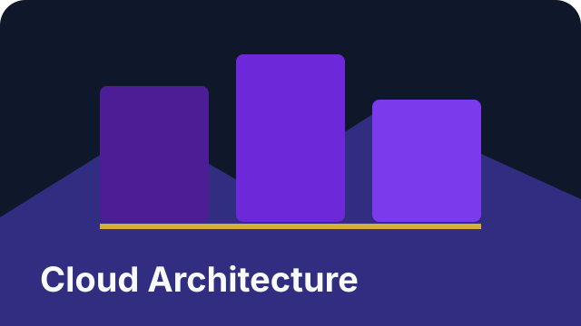

Hands-on instruction in a classroom setting.
Whether you're a beginner, career changer, veteran, or young adult, gain job-ready skills with practical labs, certification prep, and real-world projects.
Student result: "The structured labs and mock interviews helped me land my first cloud role within 8 weeks."
New visitors can click start and watch a mini cloud workflow run: trigger, validate, deploy, and notify. It is simple, visual, and gives that immediate "this is tech-savvy" first impression.
Run Automation to simulate a cloud workflow.These cards turn the homepage into a quick reference for the cloud, AI, and security ideas students actually need. Each item is tied to a real concept, not a placeholder prompt.

Match each concept to its job: VM, database, MFA, and machine learning.
Start with individual classes, youth-friendly pathways, and practical specials before moving into enterprise tracks. Build skills through hands-on labs, career projects, and guided support.
Get a 7-day roadmap, certification map, and interview checklist used by new cloud professionals. Perfect for beginners and career switchers.
No spam. Unsubscribe anytime.


As seen in: Microsoft Learn, LinkedIn, YouTube, PG Parks, Tech BlogRecognized for innovation in cloud, AI, and workforce upskilling. Trusted by public sector, enterprise, and community partners.
Focused pathways, real projects, and interview readiness for measurable results.
Weekly milestones for AZ-900, AWS CCP, and cloud fundamentals with labs and mock exams.
Deploy serverless apps, secure cloud networks, and CI/CD pipelines you can showcase.
Behavioral + technical interview prep with coaching-ready scorecards.
A powerful, timely post on compensation loss, workplace barriers, and why Black women must build transition-ready tech skills in the AI era.
Modern SOC-style simulation with real-time threat detection, alert triage, and guided response workflows.
Step through incident detection, playbook automation, and response decisions in an immersive cloud security scenario designed to mirror enterprise operations.
Launch Interactive ExperienceNew dedicated landing pages for the Microsoft certs most people ask about first: fundamentals, administration, architecture, and AI.

Beginner-friendly Azure foundations with cloud concepts, service models, identity, governance, and browser-based labs.

Identity, RBAC, VMs, storage, networking, monitoring, backup, and automation for the real Azure admin role.

Architecture-first training for landing zones, identity design, storage choices, resilience, and enterprise tradeoffs.

Start exploring AI workloads, machine learning basics, language, vision, and responsible AI on Azure.
Industry-recognized training with hands-on labs, real-world projects, and certification readiness. Starting at just $15 per class with flexible licensing for teams and enterprises.

Comprehensive introduction to AWS, Azure, and Google Cloud Platform. Ideal for IT professionals transitioning to cloud architecture and deployment.
Enterprise architecture design, scalability patterns, high availability, and disaster recovery. Prepare for AWS Solutions Architect and Azure Architect Professional certifications.
Security best practices, compliance frameworks (NIST, FedRAMP, HIPAA), threat detection, and incident response for cloud environments.

CI/CD pipelines, Docker containerization, Kubernetes orchestration, Infrastructure as Code with Terraform and Ansible. Build modern deployment systems.

Build intelligent applications with AWS SageMaker, Azure ML, and Google AI Platform. Practical machine learning for cloud professionals.

Design and build scalable data pipelines, ETL processes, data warehousing, and analytics platforms on AWS, Azure, and GCP.

AWS Lambda, Azure Functions, event-driven architectures, API Gateway, and modern microservices patterns for scalable applications.

Unlimited access to all courses, custom curriculum development, dedicated support, and team management dashboards.
Delivering results for government agencies, enterprises, and individual professionals
Real outcomes from professionals who completed our programs and advanced their careers
"The structured labs and mock interviews helped me land my first cloud role within 8 weeks."
"The certification roadmap was exactly what I needed. I passed my Azure exam and built projects I can show employers."
"Professional instruction with hands-on experience. The content is immediately applicable to enterprise environments."
Training is led by Coach Ro, a cloud instructor focused on practical labs, certification outcomes, and equitable access for career changers, veterans, and underserved communities.
Flexible cloud training solutions for workforce development, upskilling, and team certification. Available as self-paced online training, instructor-led workshops, or custom corporate programs.
Interested in a corporate training solution? Visit the Corporate Training page for a custom proposal and pricing.
Beyond core cloud paths, learners build familiarity with production-grade data platforms, observability stacks, and modern DevOps tooling.
Quick answers to help you pick the right path.
If you are new to cloud computing, start with Cloud Fundamentals 101 because it builds the exact vocabulary and platform basics employers expect. The pathway is structured so you can progress from core concepts to hands-on labs without getting overwhelmed. If you already have IT experience, you can move directly into Security, DevOps, or Architecture tracks. Most learners use Fundamentals as a launchpad before choosing a specialization.
Most learners complete the starter roadmap in 30 to 45 days with a steady 5 to 7 hours of focused work each week. Job readiness depends on consistency, portfolio quality, and interview practice just as much as course completion. We guide you through project milestones so you leave with concrete examples to discuss with recruiters and hiring managers. Learners who stay on schedule typically see measurable confidence gains within the first few weeks.
Yes, you receive a verifiable certificate for each completed pathway after meeting lesson and progress requirements. Certificates are designed to be shared on LinkedIn, resumes, and internal performance documentation. They signal practical skill development tied to specific cloud domains such as security, architecture, and automation. While certificates are not a substitute for vendor exams, they strengthen your portfolio and readiness narrative.
Yes, we provide team training for enterprise and government organizations with flexible delivery options. Programs can include role-based pathways, manager visibility dashboards, and tailored schedules for distributed teams. We also support volume pricing and custom onboarding so organizations can roll out training efficiently. If you share your goals and team size, we can map a practical plan and timeline quickly.
Average $25 per class with flexible payment options. Volume discounts available for agencies and large teams.
Compliance with federal training standards. Experience working with public sector organizations including PG Parks and Planning.
Training aligned with AWS, Azure, and GCP certification exams. Verifiable certificates upon completion.
100% practical training with real-world scenarios. No theory-only content - you build as you learn.
Led by experienced cloud architects and DevOps engineers with years of enterprise implementation experience.
Course content regularly updated to reflect latest cloud technologies, security practices, and industry trends.